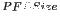

| Parameter | Variable | Description |
|---|---|---|
| Size of PFB (2 |
PFBSize | The number of channels in the PFB (this should also be the size of the FFT which follows). |
| Total Number of Taps | TotalTaps | The number of taps in the PFB FIR filter. Each tap uses 2 real multiplier cores and requires buffering the real and imaginary streams for 2 samples. |
| Windowing Function | WindowType | Which windowing function to use (this allows trading passband ripple for steepness of rolloff, etc). |
| Number of Simultaneous Inputs (2 |
n_inputs | The number of parallel time samples which are presented to the FFT core each clock. The number of output ports are set to this same value. |
| Make Biplex | MakeBiplex | Double up the inputs to match with a biplex FFT. |
| Input Bitwidth | BitWidthIn | The number of bits in each real and imaginary sample input to the PFB. |
| Output Bitwidth | BitWidthOut | The number of bits in each real and imaginary sample output from the PFB. This should match the bit width in the FFT that follows. |
| Coefficient Bitwidth | CoeffBitWidth | The number of bits in each coefficient. This is usually chosen to match the input bit width. |
| Use Distributed Memory for Coeffs | CoeffDistMem | Store the FIR coefficients in distributed memory (if = 1). Otherwise, BRAMs are used to hold the coefficients. |
| Add Latency | add_latency | Latency through adders in the FFT. |
| Mult Latency | mult_latency | Latency through multipliers in the FFT. |
| BRAM Latency | bram_latency | Latency through BRAM in the FFT. |
| Quantization Behavior | quantization | Specifies the rounding behavior used at the end of each butterfly computation to return to the number of bits specified above. |
| Bin Width Scaling (normal=1) | fwidth | PFBs give enhanced control over the width of frequency channels. By adjusting this parameter, you can scale bins to be wider (for values |
| Port | Dir. | Data Type | Description |
|---|---|---|---|
| sync | in | Boolean | Indicates the next clock cycle contains valid data |
| pol_in | in | Inherited | The (real) time-domain stream(s). |
| sync_out | out | Boolean | Indicates that data out will be valid next clock cycle. |
| pol_out | out | Inherited | The (real) PFB FIR output, which is still a time-domain signal. |
This document was generated using the LaTeX2HTML translator Version 2002-2-1 (1.71)
Copyright © 1993, 1994, 1995, 1996,
Nikos Drakos,
Computer Based Learning Unit, University of Leeds.
Copyright © 1997, 1998, 1999,
Ross Moore,
Mathematics Department, Macquarie University, Sydney.
The command line arguments were:
latex2html -local_icons -split 1 sp_pfb_fir_real.tex
The translation was initiated by Documentor on 2008-07-21